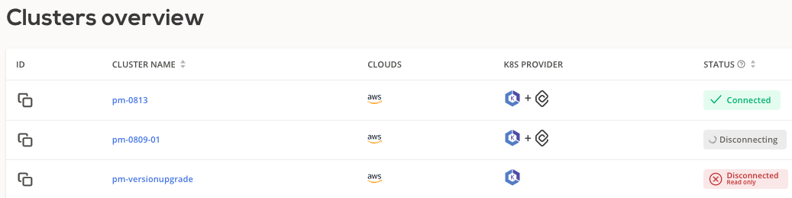
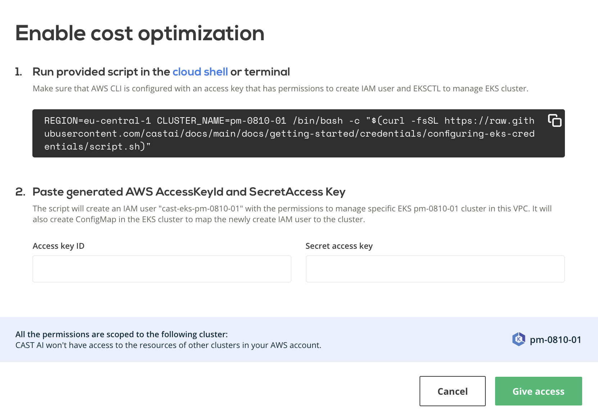
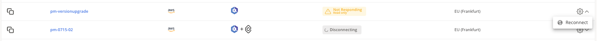
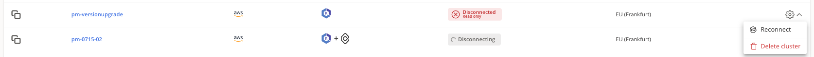

External cluster troubleshooting
This guide is intended for users who are experiencing issues while connecting their EKS, GCP, or AKS clusters to CAST AI. Once the cluster is connected, you can check the Status field in the Clusters overview screen to understand if cluster is operating as expected.

Further sections will cover the most common issues and how to resolve them.
Your cluster does not appear in the Connect Cluster screen
If a cluster does not appear in the Connect your cluster screen after you've run the connection script, perform following steps.
-
Check the Pod logs:
kubectl logs -n castai-agent -l app.kubernetes.io/name=castai-agent -
You might get output similar to this:
time="2021-05-06T14:24:03Z" level=info msg="starting the agent" time="2021-05-06T14:24:03Z" level=info msg="using cluster provider discovery" time="2021-05-06T14:24:03Z" level=fatal msg="agent failed: registering cluster: getting cluster name: describing instance_id=i-026b5fadab5b69d67: UnauthorizedOperation: You are not authorized to perform this operation.\n\tstatus code: 403, request id: 2165c357-b4a6-4f30-9266-a51f4aaa7ce7"
This particular example indicates that we failed to collect the relevant data required to identify your cluster on our system.
To solve this issue:
-
Create a deployment file such as this:
apiVersion: apps/v1 kind: Deployment metadata: name: castai-agent namespace: castai-agent labels: "app.kubernetes.io/name": castai-agent spec: replicas: 1 selector: matchLabels: "app.kubernetes.io/name": castai-agent template: metadata: labels: "app.kubernetes.io/name": castai-agent spec: serviceAccountName: castai-agent containers: - name: autoscaler image: k8s.gcr.io/cpvpa-amd64:v0.8.3 command: - /cpvpa - --target=deployment/castai-agent - --namespace=castai-agent - --poll-period-seconds=300 - --config-file=/etc/config/castai-agent-autoscaler volumeMounts: - mountPath: /etc/config name: castai-agent-autoscaler - name: agent image: "castai/agent:v0.19.2" env: - name: API_URL value: api.cast.ai - name: PROVIDER value: "eks" envFrom: - secretRef: name: castai-agent resources: requests: cpu: 100m limits: cpu: 1000m volumes: - name: castai-agent-autoscaler configMap: name: castai-agent-autoscaler -
Add the values for the missing parts next to the
#FILL THIScomment. -
Apply the deployment file using
kubectl apply -f deployment.yaml.
Refused connection to control plane
When enabling cluster optimization for the first time, the user runs the pre-generated script to grant required permissions to CAST AI as shown below.

Error message No access to Kubernetes API server, please check your firewall settings indicates that a firewall prevents communication between the control plane and CAST AI.
To solve this issue, allow access to CAST AI IP 35.221.40.21 and then enable optimization again.
Disconnected or Not responding cluster
If cluster has a Not responding status, most likely the CAST AI agent deployment is missing. Press Reconnect and follow the instructions provided.

The Not responding state is temporary and if not fixed, the cluster will enter into the Disconnected state. A disconnected cluster can be reconnected or deleted from the console as shown.

The delete action only removes the cluster from the CAST AI console, leaving it running in the cloud service provider.
Outdated CAST AI agent version
To check which agent version is running on your cluster, run the following command:
kubectl describe pod castai-agent -n castai-agent | grep castai/agent:v
You can cross-check our Github repository for the number of the latest version available.
In order to upgrade the CAST AI agent version, please perform the following steps:
- Go to Connect cluster
- Select the correct cloud service provider
- Run the provided script
The latest version of CAST AI agent is now deployed in your cluster.
Deleted agent
In case CAST AI agent deployment got deleted from the cluster, you can re-install the agent by re-running the script from Connect cluster screen. Please ensure you have chosen the correct cloud service provider.
Tip
If you are still encountering any issues, ping us with logs output at: https://castai-community.slack.com/
Shielded GKE nodes
If your GKE cluster has Shielded GKE nodes enabled, you will get shielded GKE nodes not supported error message.
Shielded GKE nodes requires that every node is part of the Managed Instance Group (MIG) provisioned for the cluster.
Since CAST AI autoscaler provisions capacity directly without using Instance Groups, this option should be disabled.
Disabling Shielded GKE nodes
You can disable Shielded GKE nodes with the gcloud command-line tool or Google Cloud Console.
Using gcloud:
gcloud container clusters update CLUSTER_NAME --no-enable-shielded-nodes
Using Google Cloud Console:
- Go to the
Google Kubernetes Enginepage in the Cloud Console. - Click on the name of the cluster you want to modify.
- Under
Security, in theShielded GKE nodesfield, clickEdit Shielded GKE nodes. - Clear the
Enable Shielded GKE nodescheckbox. - Click
Save Changes.
Warning
Toggling Shielded GKE nodes will drain, delete, and recreate all nodes in all node pools of the cluster.